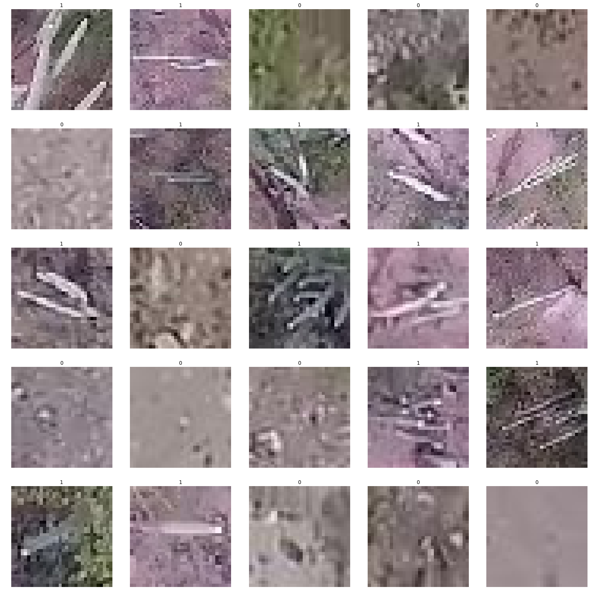
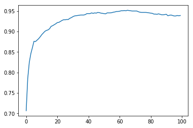

Aerial Cactus Identification
This was one my of very first competitions. While doing Practical Deep Learning for Coders, this competition provided a good source of practise. It was a binary classification problem. The goal for this competition was to determine whether the given satellite image contained a columnur cactus.
I used this dataset for two purposes :
- To implement and test ArcFace using pytorch.
- To get placed into a high LeaderBoard position in the competition using FastAI.
Approach
EDA
According to the dataset details, the images were taken from the air. The images are low-res, some of them rotated to arbitrary angles and some zoomed. From visual inspection, the cacti are somewhat easy to spot because of their unique texture and stick-like shape. The class imbalance is not severe, can be handled by data augmentation.

Data split and Transforms
Split
As the class imbalance was not servere, the data could be split into train/valid set at random.
Transforms
Following Transforms were applied with 75% probability to augment the data, then the images were resized to 128*128. Test time augmentation was not applied.
- Horizontal Flip
- Vertical Flip
- Left and Right rotation upto 10°
- Upto 110% zoom
Hyperparameters
ArcFace
- s = 64
- m = 0.0
- Adam Optimizer with fixed lr = 1e-3
Competition Classifiers
Densenet169
- Frozen model, Adam optimizer with maximum lr = 7.5e-3.
- CyclirLR scheduler
- Unfrozen model, Adam optimizer with maximum lr = 1e-6.
Resnet101
- Frozen model, Adam optimizer with maximum lr = 9e-3.
- CyclirLR scheduler
- Unfrozen model, Adam optimizer with maximum lr = 1e-6.
Model Performance
I used DenseNet169 and Resnet101 for Leaderboard and ArcFace for research purposes.
ArcFace
ArcFace was applied on the Resnet101 backbone. Implemented from scratch in pytorch. With embedding dimension = 2048 and scale_factor (s) = 64, accuracy follows :

Further experimentation using additional linear layers can boost the results. Then again, this approach is designed for one-shot learning. Worse performance in Binary Classification is quite understandable.
DenseNet169
Densenet169 needs more time to converge because of its enormous size and paramters.
| epoch | train_loss | valid_loss | error_rate | accuracy | time |
|---|---|---|---|---|---|
| 0 | 0.059754 | 0.004154 | 0.000000 | 1.000000 | 01:35 |
| 1 | 0.062731 | 0.000837 | 0.000000 | 1.000000 | 01:29 |
| 2 | 0.019187 | 0.003954 | 0.000000 | 1.000000 | 01:29 |
| 3 | 0.009922 | 0.000457 | 0.000000 | 1.000000 | 01:26 |
| 4 | 0.004491 | 0.000055 | 0.000000 | 1.000000 | 01:27 |
Resnet101
Resnet101 needed less time to converge.
| epoch | train_loss | valid_loss | error_rate | accuracy | time |
|---|---|---|---|---|---|
| 0 | 0.063169 | 0.033260 | 0.011429 | 0.988571 | 01:17 |
| 1 | 0.034835 | 0.002770 | 0.000000 | 1.000000 | 01:15 |
| 2 | 0.024171 | 0.002123 | 0.000000 | 1.000000 | 01:15 |
| 3 | 0.014281 | 0.006416 | 0.005714 | 0.994286 | 01:14 |
| 4 | 0.006923 | 0.002465 | 0.000000 | 1.000000 | 01:13 |
Competition Standings
My models acheived perfect accuracy score in the public leaderboard.
)
Rafid Abyaad
Masters Student
I work as a software engineer and participate in data science competitions